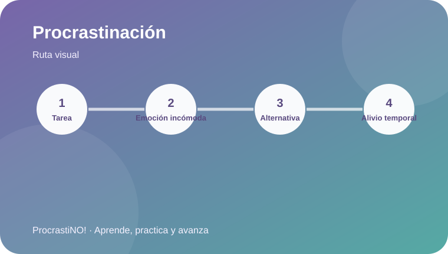

Módulo 1 · 1
La psicología de la procrastinación académica
Comprende el patrón tarea → emoción incómoda → alternativa → alivio temporal.


El ciclo de la demora
Una tarea puede generar aburrimiento, ansiedad, frustración o dudas. Elegir una actividad alternativa puede producir alivio inmediato y reforzar el patrón de posponer.
📚 Tarea
😣 Emoción
📱 Alternativa
😌 Alivio temporal
Idea clave:
Prueba convertir la tarea en un primer paso de 10–15 minutos: abrir el documento, escribir tres ideas o leer dos páginas.
Referencias
-
American Psychological Association. (2022). Procrastination: What it is, why it’s a problem, and what you can do about it. https://www.apa.org/pubs/books/procrastination
American Psychological Association. (2026). Why we procrastinate and what to do about it. https://www.apa.org/news/podcasts/speaking-of-psychology/procrastinate